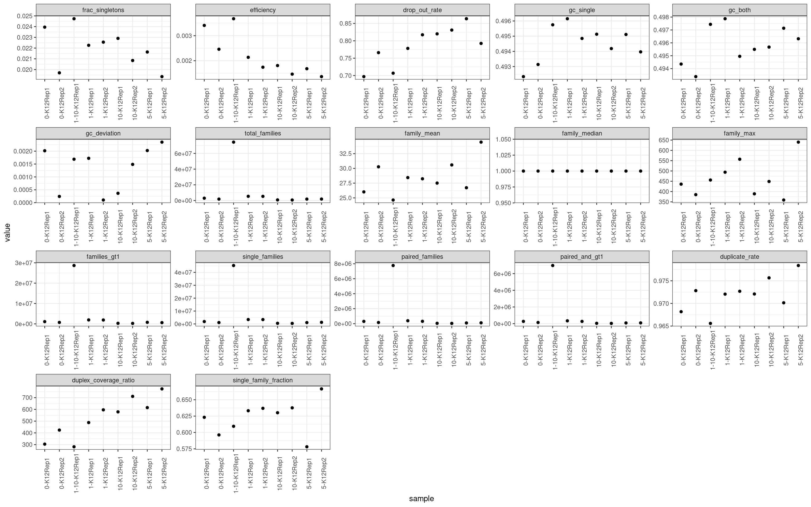
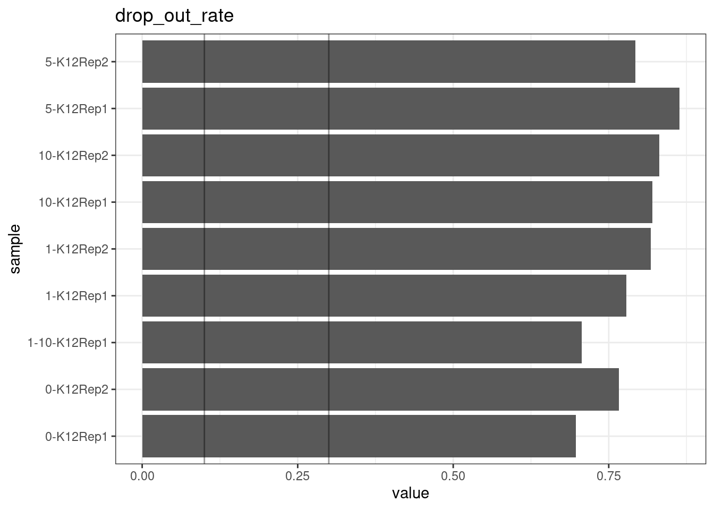
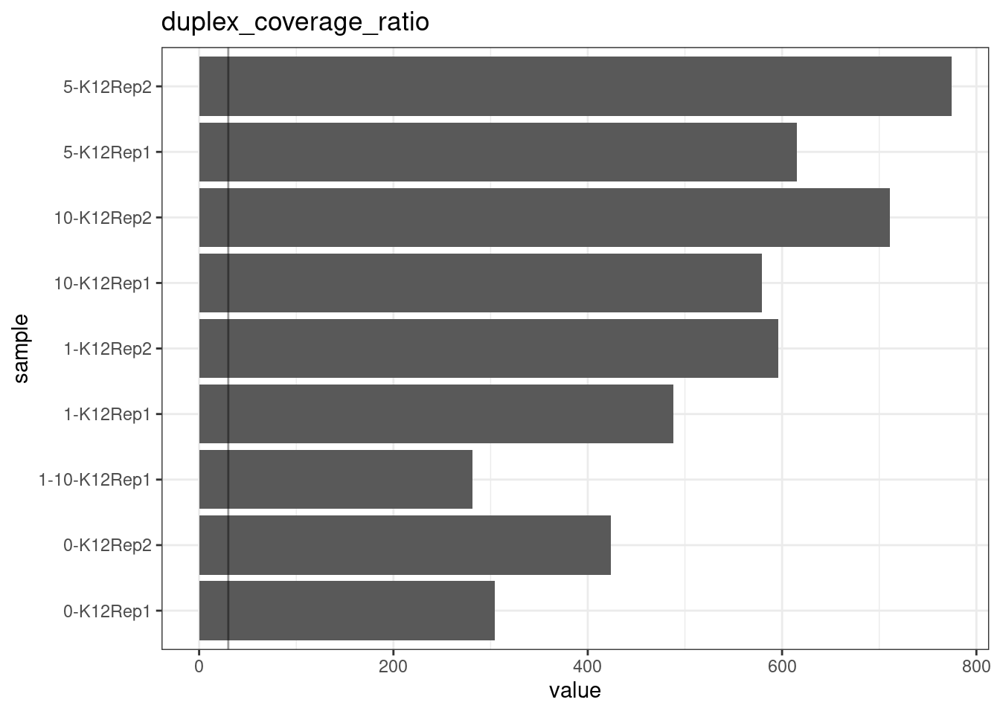
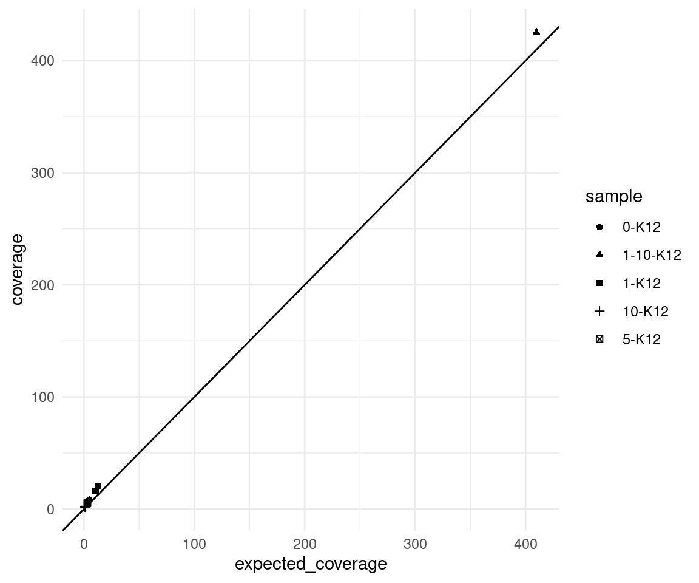
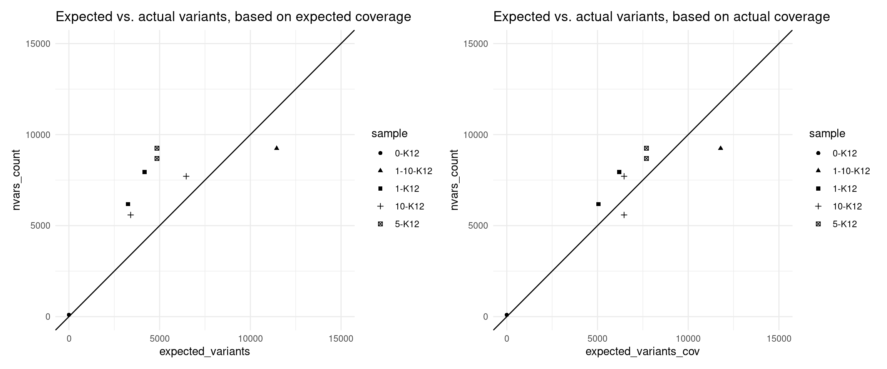
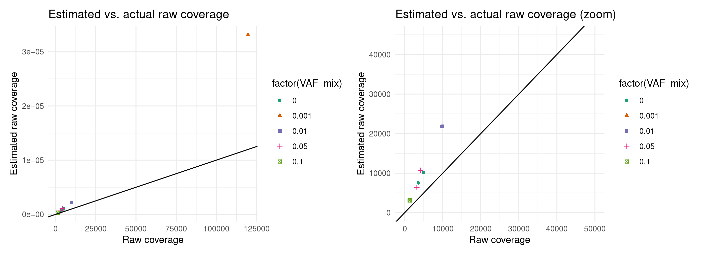
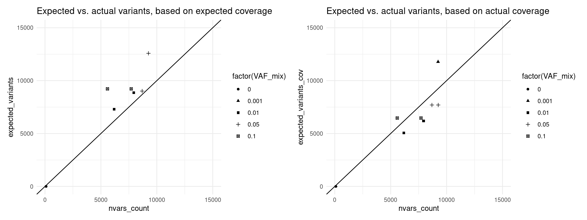

E coli spike-in experiments
Last updated: 2023-04-28
Checks: 7 0
Knit directory: G000204_duplex/
This reproducible R Markdown analysis was created with workflowr (version 1.7.0). The Checks tab describes the reproducibility checks that were applied when the results were created. The Past versions tab lists the development history.
Great! Since the R Markdown file has been committed to the Git repository, you know the exact version of the code that produced these results.
Great job! The global environment was empty. Objects defined in the global environment can affect the analysis in your R Markdown file in unknown ways. For reproduciblity it’s best to always run the code in an empty environment.
The command set.seed(20210916) was run prior to running
the code in the R Markdown file. Setting a seed ensures that any results
that rely on randomness, e.g. subsampling or permutations, are
reproducible.
Great job! Recording the operating system, R version, and package versions is critical for reproducibility.
Nice! There were no cached chunks for this analysis, so you can be confident that you successfully produced the results during this run.
Great job! Using relative paths to the files within your workflowr project makes it easier to run your code on other machines.
Great! You are using Git for version control. Tracking code development and connecting the code version to the results is critical for reproducibility.
The results in this page were generated with repository version fca5191. See the Past versions tab to see a history of the changes made to the R Markdown and HTML files.
Note that you need to be careful to ensure that all relevant files for
the analysis have been committed to Git prior to generating the results
(you can use wflow_publish or
wflow_git_commit). workflowr only checks the R Markdown
file, but you know if there are other scripts or data files that it
depends on. Below is the status of the Git repository when the results
were generated:
Ignored files:
Ignored: .DS_Store
Ignored: .Rapp.history
Ignored: .Rhistory
Ignored: .Rproj.user/
Ignored: analysis/.DS_Store
Ignored: analysis/cache/
Ignored: data/.DS_Store
Ignored: scripts/
Untracked files:
Untracked: ._.DS_Store
Untracked: ._rare-mutation-detection.Rproj
Untracked: DOCNAME
Untracked: analysis/._.DS_Store
Untracked: analysis/._ecoli_spikeins.Rmd
Untracked: analysis/calc_nanoseq_metrics.Rmd
Untracked: data/._.DS_Store
Untracked: data/._metrics.rds
Untracked: data/ecoli/
Untracked: data/ecoli_k12_metrics.rds
Untracked: data/metadata/
Untracked: data/metrics_efficiency_nossc.rds
Untracked: data/metrics_spikeins.rds
Untracked: data/mixtures
Untracked: data/ref/
Untracked: drop_out_rate.pdf
Untracked: efficiency.pdf
Untracked: prototype_code/
Untracked: stats.csv
Unstaged changes:
Modified: analysis/model.Rmd
Modified: code/load_data.R
Note that any generated files, e.g. HTML, png, CSS, etc., are not included in this status report because it is ok for generated content to have uncommitted changes.
These are the previous versions of the repository in which changes were
made to the R Markdown (analysis/ecoli_spikeins.Rmd) and
HTML (docs/ecoli_spikeins.html) files. If you’ve configured
a remote Git repository (see ?wflow_git_remote), click on
the hyperlinks in the table below to view the files as they were in that
past version.
| File | Version | Author | Date | Message |
|---|---|---|---|---|
| Rmd | fca5191 | mcmero | 2023-04-28 | Added NVC variant calling results |
| html | 8601b66 | mcmero | 2023-04-21 | Build site. |
| Rmd | 1940332 | mcmero | 2023-04-21 | Filter/check by expected reference variants |
| html | f0bc24f | mcmero | 2023-03-15 | Build site. |
| Rmd | 460c519 | mcmero | 2023-03-15 | Revised estimated efficiency analyses |
| html | 44865a1 | mcmero | 2023-03-07 | Build site. |
| Rmd | a38edaa | mcmero | 2023-03-07 | Added coverage estimations using estimated efficiency |
| html | bec5375 | Marek Cmero | 2022-11-18 | Build site. |
| Rmd | 23f67a5 | Marek Cmero | 2022-11-18 | Fixed experiment table |
| html | f90d40a | Marek Cmero | 2022-08-18 | Build site. |
| Rmd | 7ff227e | Marek Cmero | 2022-08-18 | Added downsampling experiments and some presentation-only plots. |
| html | f5859e9 | Marek Cmero | 2022-08-16 | Build site. |
| Rmd | e6092ec | Marek Cmero | 2022-08-16 | Added duplicate rate stat to 0.1% spike-in sample |
| html | a099d38 | Marek Cmero | 2022-08-05 | Build site. |
| Rmd | a0a39ad | Marek Cmero | 2022-08-05 | Added sample 1-10-K12 to analysis |
| html | 565d602 | Marek Cmero | 2022-07-13 | Build site. |
| Rmd | 847a8c2 | Marek Cmero | 2022-07-13 | Added variant analysis for E coli spike ins |
| html | 9a639c3 | Marek Cmero | 2022-07-12 | Build site. |
| Rmd | 2ec3680 | Marek Cmero | 2022-07-12 | Added preliminary QC results/metrics from spike-in experiments |
E coli spike-in experiment results
E coli K12 strain was spiked into E coli BL21 with different proportions:
| Lib Name | Spike in % | ~Cell equivalent* |
|---|---|---|
| 0-K12Rep1 | 0%K12Rep1(BL2 only) | 318 |
| 0-K12Rep2 | 0%K12Rep2 (BL2 only) | 202 |
| 1-K12Rep1 | 1%K12Rep1 | 601 |
| 1-K12Rep2 | 1%K12Rep2 | 585 |
| 10-K12Rep1 | 10%K12Rep1 | 86 |
| 10-K12Rep2 | 10%K12Rep2 | 74 |
| 1_10-K12Rep1 | 0.1%K12Rep1 | 11,139 |
| 5-K12Rep1 | 5%K12Rep1 | 188 |
| 5-K12Rep2 | 5%K12Rep2 | 228 |
*based on R1 unique read number.
The 1_10-K12Rep1 sample is currently omitted in this analysis as it is too large to process with the existing script.
MultiQC reports:
library(ggplot2)
library(data.table)
library(dplyr)
library(here)
library(tibble)
library(stringr)
library(Rsamtools)
library(GenomicRanges)
library(seqinr)
library(parallel)
library(readxl)
library(patchwork)
library(RColorBrewer)
library(UpSetR)
library(vcfR)
library(tidyr)
library('R.utils')source(here('code/load_data.R'))
source(here('code/plot.R'))
source(here('code/efficiency_nanoseq_functions.R'))genome_max <- 4528118
cores <- 8genomeFile <- here('data/ref/Escherichia_coli_strain_BL21_TaKaRa.fasta')
rinfo_dir <- here('data/ecoli/AGRF_CAGRF220410419_HFVGHDSX3/QC/read_info')
markdup_dir <- here('data/ecoli/AGRF_CAGRF220410419_HFVGHDSX3/QC/mark_duplicates')
qualimap_dir <- here('data/ecoli/AGRF_CAGRF220410419_HFVGHDSX3/QC/qualimap')
qualimap_cons_dir <- here('data/ecoli/AGRF_CAGRF220410419_HFVGHDSX3/QC/consensus/qualimap')
variant_dir <- here('data/ecoli/AGRF_CAGRF220410419_HFVGHDSX3/variants')
variant_nvc_dir <- here('data/ecoli/AGRF_CAGRF220410419_HFVGHDSX3/variants_nvc')
nucdiff_snp_file <- here('data/ref/nucdiff/ecoli_BL21_vs_ATCC_1.snps')sample_names <- list.files(rinfo_dir) %>%
str_split('\\.txt.gz') %>%
lapply(., dplyr::first) %>%
unlist() %>%
str_split('_') %>%
lapply(., head, 2) %>%
lapply(., paste, collapse='-') %>%
unlist()
# load variant data
var_sample_names <- list.files(variant_dir) %>%
str_split('_HFVGHDSX3') %>%
lapply(., dplyr::first) %>%
unlist()
# load reference SNPs
ref_snps <- read.delim(nucdiff_snp_file, sep = '\t', header = FALSE)
N_TOTAL_VARS <- length(unique(ref_snps$V1))
vaf_vs <- load_variants(variant_dir, var_sample_names) %>%
calculate_vafs() %>%
mutate(is_ref_snp = POS %in% ref_snps$V1)
var_nvc <- load_variants(variant_nvc_dir, sample_names) %>%
mutate(VAF = INFO %>%
strsplit("AF=") %>%
lapply(., last) %>%
unlist() %>%
strsplit(",") %>%
lapply(., last) %>%
unlist() %>%
as.numeric(),
is_ref_snp = POS %in% ref_snps$V1) %>%
filter(ALT %in% c('A', 'T', 'G', 'C'))
# load and fetch duplicate rate from MarkDuplicates output
mdup <- load_markdup_data(markdup_dir, sample_names)
# get mean coverage for pre and post-consensus reads
qmap_cov <- get_qmap_coverage(qualimap_dir, sample_names)
qmap_cons_cov <- get_qmap_coverage(qualimap_cons_dir, sample_names)
# uncomment below to calculate metrics
# calculate metrics for nanoseq
rlen <- 151; skips <- 5
# metrics <- calc_metrics_new_rbs(rinfo_dir, cores = cores) %>% bind_rows()
metrics <- readRDS(here('data/metrics_spikeins.rds'))
metrics$single_family_fraction <- metrics$single_families / metrics$total_families
metrics$duplicate_rate <- mdup
metrics$duplex_coverage_ratio <- qmap_cov$coverage / qmap_cons_cov$coverage
metrics$duplex_coverage_ratio[qmap_cons_cov$coverage < 1] <- 0 # fix when < 1 duplex cov
metrics$sample <- gsub('-HFVGHDSX3', '', sample_names)
# cache metrics object
# saveRDS(metrics, file = here('data/metrics.rds'))
# prepare for plotting
mm <- data.frame(reshape2::melt(metrics))
colnames(mm)[2] <- 'metric'ggplot(mm, aes(sample, value)) +
geom_point() +
theme_bw() +
theme(axis.text.x = element_text(angle = 90)) +
facet_wrap(~metric, scales = 'free') +
scale_colour_brewer(palette = 'Dark2')
Metric comparison plots
Duplicate rate
Fraction of duplicate reads calculated by Picard’s MarkDuplicates. This is based on barcode-aware aligned duplicates mapping to the same 5’ positions for both read pairs. The NanoSeq Analysis pipeline states the optimal empirical duplicate rate is 75-76% (marked in the plot).
metric <- 'duplicate_rate'
ggplot(mm[mm$metric == metric,], aes(sample, value)) +
geom_histogram(stat = 'identity', position = 'dodge') +
theme_bw() +
coord_flip() +
geom_hline(yintercept = c(0.75, 0.76), alpha = 0.4) +
ggtitle(metric)
Fraction of singleton reads
Shows the number of single-read families divided by the total number of reads. As suggested by Stoler et al. 2016, this metric can server as a proxy for error rate, as (uncorrected) barcode mismatches will manifest as single-read families. The lower the fraction of singletons, the better.
metric <- 'frac_singletons'
ggplot(mm[mm$metric == metric,], aes(sample, value)) +
geom_histogram(stat = 'identity', position = 'dodge') +
theme_bw() +
coord_flip() +
ggtitle(metric)
Drop-out rate
This is the same calculation as F-EFF in the NanoSeq Analysis pipeline:
“This shows the fraction of read bundles missing one of the two original strands beyond what would be expected under random sampling (assuming a binomial process). Good values are between 0.10-0.30, and larger values are likely due to DNA damage such as modified bases or internal nicks that prevent amplification of one of the two strands. Larger values do not impact the quality of the results, just reduce the efficiency of the protocol.”
This is similar to the singleton fraction, but taking into account loss of pairs due to sampling. The optimal range is shown by the lines.
metric <- 'drop_out_rate'
ggplot(mm[mm$metric == metric,], aes(sample, value)) +
geom_histogram(stat = 'identity', position = 'dodge') +
theme_bw() +
coord_flip() +
geom_hline(yintercept = c(0.1, 0.3), alpha = 0.4) +
ggtitle(metric)
Efficiency
Efficiency is the number of duplex bases divided by the number of sequenced bases. According the NanoSeq Analysis pipeline, this value is maximised at ~0.07 when duplicate rates and strand drop-outs are optimal.
metric <- 'efficiency'
ggplot(mm[mm$metric == metric,], aes(sample, value)) +
geom_histogram(stat = 'identity', position = 'dodge') +
theme_bw() +
coord_flip() +
geom_hline(yintercept = c(0.07), alpha = 0.4) +
ggtitle(metric)
GC deviation
GC deviation is the absolute difference between GC_BOTH
and GC_SINGLE calculated by the NanoSeq Analysis
pipeline. The lower this deviation, the better.
“GC_BOTH and GC_SINGLE: the GC content of RBs with both strands and with just one strand. The two values should be similar between them and similar to the genome average. If there are large deviations that is possibly due to biases during PCR amplification. If GC_BOTH is substantially larger than GC_SINGLE, DNA denaturation before dilution may have taken place.”
metric <- 'gc_deviation'
ggplot(mm[mm$metric == metric,], aes(sample, value)) +
geom_histogram(stat = 'identity', position = 'dodge') +
theme_bw() +
coord_flip() +
ggtitle(metric)
Duplex Coverage ratio
The mean sequence (pre-duplex) coverage divided by mean duplex coverage. Indicates the yield of how much duplex coverage we get at each sample’s sequence coverage. Abascal et al. report that their yield was approximately 30x (marked on the plot).
metric <- 'duplex_coverage_ratio'
ggplot(mm[mm$metric == metric,], aes(sample, value)) +
geom_histogram(stat = 'identity', position = 'dodge') +
theme_bw() +
coord_flip() +
geom_hline(yintercept = 30, alpha = 0.4) +
ggtitle(metric)
Family statistics
Comparison of family pair sizes between samples (these are calculated from total reads of paired AB and BA families).
ggplot(mm[mm$metric %like% 'family', ], aes(value, sample, colour = metric)) +
geom_point() +
coord_trans(x='log2') +
scale_x_continuous(breaks=seq(0, 94, 8)) +
theme(axis.text.x = element_text(size=5)) +
theme_bw() +
ggtitle('Family pair sizes')
The following plot shows:
- families_gt1: number of family pairs where at least one family (AB or BA) has > 1 reads.
- paired_families: number of family pairs where both families (AB and BA) have > 0 reads.
- paired_and_gt1: number of family pairs where both families (AB and BA) have > 1 reads.
p1 <- ggplot(mm[mm$metric %like% 'pair|gt1', ], aes(value, sample, fill = metric)) +
geom_bar(stat='identity', position='dodge') +
theme_bw() +
ggtitle('Family statistics')
p2 <- ggplot(mm[mm$metric %like% 'pair|gt1' & !mm$sample %like% '1-10', ], aes(value, sample, fill = metric)) +
geom_bar(stat='identity', position='dodge') +
theme_bw() +
ggtitle('Family statistics without 0.1% spike-in sample')
p1 + p2
Variant calling analysis
Here we show the VAF mean, number of variants called, as well as a number of other metrics used in estimating number of variants called.
# number of differing variant sites between the E coli genomes
COVERAGE_PER_GENOME <- 10
vaf_sm <- data.table(vaf_vs)[, list(VAF_mean = mean(VAF), nvars_ref = sum(is_ref_snp), nvars_nonref = sum(!is_ref_snp)), by=sample] %>%
mutate(VAF_mix = as.character(sample) %>% strsplit('-K12Rep') %>%
lapply(dplyr::first) %>% unlist()) %>%
left_join(., select(metrics, c(sample, efficiency)), by='sample') %>%
separate(col = sample, sep = 'Rep', into = c('sample', 'replicate')) %>%
mutate(coverage = qmap_cons_cov$coverage,
cells = c(318, 202, 11139, 601, 585, 86, 74, 188, 228)) %>%
reshape2::melt(., id.vars = c("sample", "replicate", "cells","VAF_mean",
"VAF_mix", "efficiency", "coverage"),
measure.vars = c("nvars_ref", "nvars_nonref"),
variable.name = "nvars_type", value.name = "nvars_count")
vaf_sm$VAF_mix[vaf_sm$VAF_mix == '1-10'] <- 0.1
# vaf_sm$efficiency[vaf_sm$sample == ] <- 0.002 # a guess
# vaf_sm$cells <- c(318, 202, 11139, 601, 585, 86, 74, 188, 228)
vaf_sm$VAF_mix <- as.numeric(vaf_sm$VAF_mix) / 100
vaf_sm$expected_coverage <- vaf_sm$cells * COVERAGE_PER_GENOME * vaf_sm$efficiency
vaf_sm$variant_caller <- 'varscan2'
print(vaf_sm) sample replicate cells VAF_mean VAF_mix efficiency coverage
1 0-K12 1 318 0.144585508 0.000 0.003411398 16.4145
2 0-K12 2 202 0.159597801 0.000 0.002459236 8.5023
3 1-10-K12 1 11139 0.005226775 0.001 0.003678547 424.9759
4 1-K12 1 601 0.070934203 0.010 0.002135843 20.4558
5 1-K12 2 585 0.087725317 0.010 0.001740567 16.3451
6 10-K12 1 86 0.222747259 0.100 0.001806526 2.3988
7 10-K12 2 74 0.230245999 0.100 0.001463852 1.8268
8 5-K12 1 188 0.186009906 0.050 0.001680279 5.1634
9 5-K12 2 228 0.185332683 0.050 0.001364435 5.3801
10 0-K12 1 318 0.144585508 0.000 0.003411398 16.4145
11 0-K12 2 202 0.159597801 0.000 0.002459236 8.5023
12 1-10-K12 1 11139 0.005226775 0.001 0.003678547 424.9759
13 1-K12 1 601 0.070934203 0.010 0.002135843 20.4558
14 1-K12 2 585 0.087725317 0.010 0.001740567 16.3451
15 10-K12 1 86 0.222747259 0.100 0.001806526 2.3988
16 10-K12 2 74 0.230245999 0.100 0.001463852 1.8268
17 5-K12 1 188 0.186009906 0.050 0.001680279 5.1634
18 5-K12 2 228 0.185332683 0.050 0.001364435 5.3801
nvars_type nvars_count expected_coverage variant_caller
1 nvars_ref 41 10.848247 varscan2
2 nvars_ref 37 4.967657 varscan2
3 nvars_ref 11632 409.753348 varscan2
4 nvars_ref 7465 12.836414 varscan2
5 nvars_ref 5735 10.182318 varscan2
6 nvars_ref 1700 1.553612 varscan2
7 nvars_ref 632 1.083251 varscan2
8 nvars_ref 5364 3.158924 varscan2
9 nvars_ref 5959 3.110913 varscan2
10 nvars_nonref 151 10.848247 varscan2
11 nvars_nonref 85 4.967657 varscan2
12 nvars_nonref 2570 409.753348 varscan2
13 nvars_nonref 631 12.836414 varscan2
14 nvars_nonref 469 10.182318 varscan2
15 nvars_nonref 96 1.553612 varscan2
16 nvars_nonref 91 1.083251 varscan2
17 nvars_nonref 424 3.158924 varscan2
18 nvars_nonref 435 3.110913 varscan2vaf_nvc <- data.table(var_nvc)[, list(VAF_mean = mean(VAF), nvars_ref = sum(is_ref_snp),
nvars_nonref = sum(!is_ref_snp)), by=sample] %>%
mutate(VAF_mix = as.character(sample) %>% strsplit('-K12Rep') %>%
lapply(dplyr::first) %>%
unlist(),
sample = gsub('-HFVGHDSX3', '', sample)) %>%
left_join(., select(metrics, c(sample, efficiency)), by='sample') %>%
separate(col = sample, sep = 'Rep', into = c('sample', 'replicate')) %>%
mutate(coverage = qmap_cons_cov$coverage,
cells = c(318, 202, 11139, 601, 585, 86, 74, 188, 228)) %>%
reshape2::melt(.,
id.vars = c("sample", "replicate", "cells", "VAF_mean",
"VAF_mix", "efficiency", "coverage"),
measure.vars = c("nvars_ref", "nvars_nonref"),
variable.name = "nvars_type", value.name = "nvars_count") %>%
mutate(variant_caller = 'nvc')
print(vaf_nvc) sample replicate cells VAF_mean VAF_mix efficiency coverage nvars_type
1 0-K12 1 318 0.4216521 0 0.003411398 16.4145 nvars_ref
2 0-K12 2 202 0.4832105 0 0.002459236 8.5023 nvars_ref
3 1-10-K12 1 11139 0.0529065 1-10 0.003678547 424.9759 nvars_ref
4 1-K12 1 601 0.1901343 1 0.002135843 20.4558 nvars_ref
5 1-K12 2 585 0.2379405 1 0.001740567 16.3451 nvars_ref
6 10-K12 1 86 0.6925152 10 0.001806526 2.3988 nvars_ref
7 10-K12 2 74 0.7464506 10 0.001463852 1.8268 nvars_ref
8 5-K12 1 188 0.4499639 5 0.001680279 5.1634 nvars_ref
9 5-K12 2 228 0.4133003 5 0.001364435 5.3801 nvars_ref
10 0-K12 1 318 0.4216521 0 0.003411398 16.4145 nvars_nonref
11 0-K12 2 202 0.4832105 0 0.002459236 8.5023 nvars_nonref
12 1-10-K12 1 11139 0.0529065 1-10 0.003678547 424.9759 nvars_nonref
13 1-K12 1 601 0.1901343 1 0.002135843 20.4558 nvars_nonref
14 1-K12 2 585 0.2379405 1 0.001740567 16.3451 nvars_nonref
15 10-K12 1 86 0.6925152 10 0.001806526 2.3988 nvars_nonref
16 10-K12 2 74 0.7464506 10 0.001463852 1.8268 nvars_nonref
17 5-K12 1 188 0.4499639 5 0.001680279 5.1634 nvars_nonref
18 5-K12 2 228 0.4133003 5 0.001364435 5.3801 nvars_nonref
nvars_count variant_caller
1 91 nvc
2 71 nvc
3 2985 nvc
4 1197 nvc
5 905 nvc
6 1233 nvc
7 699 nvc
8 1457 nvc
9 1720 nvc
10 333 nvc
11 294 nvc
12 659 nvc
13 402 nvc
14 354 nvc
15 142 nvc
16 128 nvc
17 273 nvc
18 335 nvcCompare variants to expected reference vars
Plot number of variants that match the expected reference SNPs versus the non-reference SNPs.
p1 <- ggplot(vaf_sm, aes(sample, nvars_count, colour = nvars_type, shape = nvars_type)) +
geom_point(size = 3) +
theme_minimal() +
theme(legend.position = 'bottom') +
ggtitle('Varscan reference and non-reference variants called')
p2 <- ggplot(vaf_sm[vaf_sm$nvars_type == 'nvars_ref',], aes(sample, nvars_count / N_TOTAL_VARS)) +
geom_point(size = 3) +
theme_minimal() +
theme(legend.position = 'bottom') +
ylim(0, 1) +
ggtitle('Varscan fraction of reference variants called')
p3 <- ggplot(vaf_sm, aes(sample, coverage, colour = replicate, shape = replicate)) +
geom_point(size = 3) +
theme_minimal() +
theme(legend.position = 'bottom') +
ggtitle('Duplex coverage')
p4 <- ggplot(vaf_nvc, aes(sample, nvars_count, colour = nvars_type, shape = nvars_type)) +
geom_point(size = 3) +
theme_minimal() +
theme(legend.position = 'bottom') +
ggtitle('NVC reference and non-reference variants called')
p5 <- ggplot(vaf_nvc[vaf_nvc$nvars_type == 'nvars_ref',], aes(sample, nvars_count / N_TOTAL_VARS)) +
geom_point(size = 3) +
theme_minimal() +
theme(legend.position = 'bottom') +
ylim(0, 1) +
ggtitle('NVC fraction of reference variants called')
p6 <- ggplot(vaf_nvc, aes(sample, coverage, colour = replicate, shape = replicate)) +
geom_point(size = 3) +
theme_minimal() +
theme(legend.position = 'bottom') +
ggtitle('Duplex coverage')
p1 + p2 + p3
| Version | Author | Date |
|---|---|---|
| 8601b66 | mcmero | 2023-04-21 |
p4 + p5 + p6Expected coverage
Here we plot the observed mean coverage versus the expected coverage, the latter is calculated as \(n * c * d\) where \(n =\) number of input cells, \(c =\) target coverage per genome equivalent (10) and \(d =\) duplex efficiency.
We can see that the real coverage is higher than expected, this is likely due to the efficiency calculation being based on 2 minimum reads per strand, whereas we ran duplex consensus calling without SSC.
ggplot(vaf_sm, aes(expected_coverage, coverage, shape=sample)) +
geom_point() +
theme_minimal() +
geom_abline(slope = 1)
Expected variants
Here we use the revised model to estimate the number of variants we expected to call with 95% confidence, using the formula above.
vaf_sm$expected_variants <- (1 - (1 - vaf_sm$VAF_mix) ^ round(vaf_sm$expected_coverage)) * N_TOTAL_VARS
vaf_sm$expected_variants_cov <- (1 - (1 - vaf_sm$VAF_mix) ^ round(vaf_sm$coverage)) * N_TOTAL_VARS
p1 <- ggplot(vaf_sm[vaf_sm$nvars_type == 'nvars_ref',], aes(expected_variants, nvars_count, shape=sample)) +
geom_point() +
theme_minimal() +
geom_abline(slope = 1) +
scale_x_continuous(limits = c(0,15000)) +
scale_y_continuous(limits = c(0,15000)) +
ggtitle('Expected vs. actual variants, based on expected coverage')
p2 <- ggplot(vaf_sm[vaf_sm$nvars_type == 'nvars_ref',], aes(expected_variants_cov, nvars_count, shape=sample)) +
geom_point() +
theme_minimal() +
geom_abline(slope = 1) +
scale_x_continuous(limits = c(0,15000)) +
scale_y_continuous(limits = c(0,15000)) +
ggtitle('Expected vs. actual variants, based on actual coverage')
p1 + p2
p1 <- ggplot(vaf_sm[vaf_sm$nvars_type == 'nvars_ref',], aes(expected_coverage, coverage, shape=sample)) +
geom_point() +
theme_minimal() +
geom_abline(slope = 1) +
theme(legend.position = 'none') +
ggtitle('Expected vs. actual coverage')
p2 <- ggplot(vaf_sm[vaf_sm$nvars_type == 'nvars_ref',], aes(expected_variants, nvars_count, shape=sample)) +
geom_point() +
theme_minimal() +
geom_abline(slope = 1) +
theme(legend.position = 'none') +
scale_x_continuous(limits = c(0,15000)) +
scale_y_continuous(limits = c(0,15000)) +
ggtitle('Expected vs. actual variants\nbased on expected coverage')
p3 <- ggplot(vaf_sm[vaf_sm$nvars_type == 'nvars_ref',], aes(expected_variants_cov, nvars_count, shape=sample)) +
geom_point() +
theme_minimal() +
geom_abline(slope = 1) +
theme(legend.position = 'none') +
scale_x_continuous(limits = c(0,15000)) +
scale_y_continuous(limits = c(0,15000)) +
ggtitle('Expected vs. actual variants\nbased on actual coverage')
p1 + p2 + p3Expected raw coverage (re-estimated)
Here it looks like we can’t estimate raw coverage very well, so I’m just going to use actual coverage in the meantime, for downstream analyses.
eff <- vaf_sm[vaf_sm$nvars_type == 'nvars_ref',] %>% rename(., c('coverage' = 'dup_coverage'))
eff$sample <- paste0(eff$sample, 'Rep', eff$replicate)
eff$raw_coverage <- qmap_cov$coverage
md <- list.files(
markdup_dir,
full.names = TRUE,
recursive = TRUE,
pattern = 'txt') %>%
paste('grep -E "Library|LIBRARY"', .) %>%
lapply(., fread) %>%
suppressMessages()
# calculate sequencing ratio
eff$libsize <- lapply(md, select, ESTIMATED_LIBRARY_SIZE) %>% unlist() %>% as.numeric()
eff$total_reads <- lapply(md, function(x){x$READ_PAIRS_EXAMINED - x$READ_PAIR_OPTICAL_DUPLICATES}) %>% as.numeric()
eff$seqratio <- eff$total_reads / eff$libsize
# estimate duplex coverage from seqratio
eff$est_raw_coverage <- eff$seqratio * eff$cells
eff$est_efficiency <- (ppois(q=2-0.1, lambda=eff$seqratio/2, lower.tail=F)/(1-dpois(0, eff$seqratio/2)))^2 / (eff$seqratio/(1-exp(-eff$seqratio)))
# here we add drop-out rate to the mix
eff <- filter(mm, metric == 'drop_out_rate') %>%
select(c('sample', 'value')) %>%
rename(value = 'drop_out_rate') %>%
left_join(eff, ., by = 'sample')
eff$est_efficiency_wdo <- eff$est_efficiency * (1 - eff$drop_out_rate)
eff$est_dup_coverage <- eff$raw_coverage * eff$est_efficiency
eff$expected_variants <- (1 - (1 - eff$VAF_mix) ^ round(eff$est_dup_coverage)) * N_TOTAL_VARS
p1 <- ggplot(eff, aes(raw_coverage, est_raw_coverage, colour=factor(VAF_mix), shape=factor(VAF_mix))) +
geom_point() +
theme_minimal() +
geom_abline(slope = 1) +
xlab('Raw coverage') +
ylab('Estimated raw coverage') +
ggtitle('Estimated vs. actual raw coverage') +
scale_colour_brewer(palette = 'Dark2')
p2 <- ggplot(eff, aes(raw_coverage, est_raw_coverage, colour=factor(VAF_mix), shape=factor(VAF_mix))) +
geom_point() +
theme_minimal() +
geom_abline(slope = 1) +
xlab('Raw coverage') +
ylab('Estimated raw coverage') +
ggtitle('Estimated vs. actual raw coverage (zoom)') +
scale_colour_brewer(palette = 'Dark2') +
xlim(0, 50000) + ylim(0, 45000)
p1 + p2
Expected efficiency
Ideally, we want to try to estimate the coverage prior to sequencing. In these experiments, our drop-out rate was much higher than expected, so we will have to integrate that into the estimate. Here we estimate the efficiency and ultimately the number of variants knowing only the drop-out rate and library size.
p1 <- ggplot(eff, aes(efficiency, est_efficiency, colour=factor(VAF_mix), shape=factor(VAF_mix))) +
geom_point() +
theme_minimal() +
geom_abline(slope = 1) +
xlab('Efficiency') +
ylab('Estimated duplex efficiency') +
ggtitle('Estimated vs. actual duplex efficiency') +
scale_colour_brewer(palette = 'Dark2') +
xlim(0, 0.05) + ylim(0, 0.05)
p2 <- ggplot(eff, aes(efficiency, est_efficiency_wdo, colour=factor(VAF_mix), shape=factor(VAF_mix))) +
geom_point() +
theme_minimal() +
geom_abline(slope = 1) +
xlab('Efficiency') +
ylab('Estimated duplex efficiency with drop-out') +
ggtitle('Estimated vs. actual duplex efficiency (with drop-out)') +
scale_colour_brewer(palette = 'Dark2') +
xlim(0, 0.02) + ylim(0, 0.02)
p1 + p2
Expected duplex coverage adjusted by drop-out
p5 <- ggplot(eff, aes(dup_coverage, est_dup_coverage, colour=factor(VAF_mix), shape=factor(VAF_mix))) +
geom_point() +
theme_minimal() +
geom_abline(slope = 1) +
ylab('Estimated duplex coverage') +
xlab('Duplex coverage') +
ggtitle('Estimated vs. actual duplex\ncoverage') +
scale_colour_brewer(palette = 'Dark2') +
xlim(0, 500) + ylim(0, 500)
p6 <- ggplot(eff, aes(dup_coverage, est_dup_coverage * (1 - drop_out_rate), colour=factor(VAF_mix), shape=factor(VAF_mix))) +
geom_point() +
theme_minimal() +
geom_abline(slope = 1) +
ylab('Estimated duplex coverage') +
xlab('Duplex coverage') +
ggtitle('Estimated vs. actual duplex\ncoverage (zoom) w/ drop out') +
scale_colour_brewer(palette = 'Dark2') +
xlim(0, 50) + ylim(0, 50)
p7 <- ggplot(eff, aes(dup_coverage, est_dup_coverage * (1 - drop_out_rate) * 0.5, colour=factor(VAF_mix), shape=factor(VAF_mix))) +
geom_point() +
theme_minimal() +
geom_abline(slope = 1) +
ylab('Estimated duplex coverage') +
xlab('Duplex coverage') +
ggtitle('Estimated vs. actual duplex\ncoverage (zoom) w/ drop out + correction') +
scale_colour_brewer(palette = 'Dark2') +
xlim(0, 50) + ylim(0, 50)
p5 + p6 + p7
Expected variants recalculated with expected efficiency
eff$expected_variants <- (1 - (1 - eff$VAF_mix) ^ round(eff$est_dup_coverage * (1 - eff$drop_out_rate) * 0.5)) * N_TOTAL_VARS
eff$expected_variants_cov <- (1 - (1 - eff$VAF_mix) ^ round(eff$dup_coverage)) * N_TOTAL_VARS
p1 <- ggplot(eff, aes(nvars_count, expected_variants, shape=factor(VAF_mix))) +
geom_point() +
theme_minimal() +
geom_abline(slope = 1) +
scale_x_continuous(limits = c(0,15000)) +
scale_y_continuous(limits = c(0,15000)) +
ggtitle('Expected vs. actual variants, based on expected coverage')
p2 <- ggplot(eff, aes(nvars_count, expected_variants_cov, shape=factor(VAF_mix))) +
geom_point() +
theme_minimal() +
geom_abline(slope = 1) +
scale_x_continuous(limits = c(0,15000)) +
scale_y_continuous(limits = c(0,15000)) +
ggtitle('Expected vs. actual variants, based on actual coverage')
p1 + p2
sessionInfo()R version 4.2.0 (2022-04-22)
Platform: x86_64-pc-linux-gnu (64-bit)
Running under: CentOS Linux 7 (Core)
Matrix products: default
BLAS: /stornext/System/data/apps/R/R-4.2.0/lib64/R/lib/libRblas.so
LAPACK: /stornext/System/data/apps/R/R-4.2.0/lib64/R/lib/libRlapack.so
locale:
[1] LC_CTYPE=en_US.UTF-8 LC_NUMERIC=C
[3] LC_TIME=en_US.UTF-8 LC_COLLATE=en_US.UTF-8
[5] LC_MONETARY=en_US.UTF-8 LC_MESSAGES=en_US.UTF-8
[7] LC_PAPER=en_US.UTF-8 LC_NAME=C
[9] LC_ADDRESS=C LC_TELEPHONE=C
[11] LC_MEASUREMENT=en_US.UTF-8 LC_IDENTIFICATION=C
attached base packages:
[1] parallel stats4 stats graphics grDevices utils datasets
[8] methods base
other attached packages:
[1] R.utils_2.12.2 R.oo_1.25.0 R.methodsS3_1.8.2
[4] tidyr_1.3.0 vcfR_1.14.0 UpSetR_1.4.0
[7] RColorBrewer_1.1-3 patchwork_1.1.2 readxl_1.4.2
[10] seqinr_4.2-23 Rsamtools_2.12.0 Biostrings_2.64.1
[13] XVector_0.36.0 GenomicRanges_1.48.0 GenomeInfoDb_1.32.4
[16] IRanges_2.30.1 S4Vectors_0.34.0 BiocGenerics_0.42.0
[19] stringr_1.5.0 tibble_3.1.8 here_1.0.1
[22] dplyr_1.1.0 data.table_1.14.8 ggplot2_3.3.6
[25] workflowr_1.7.0
loaded via a namespace (and not attached):
[1] nlme_3.1-160 bitops_1.0-7 fs_1.5.2
[4] httr_1.4.4 rprojroot_2.0.3 tools_4.2.0
[7] bslib_0.4.0 utf8_1.2.2 R6_2.5.1
[10] vegan_2.6-4 mgcv_1.8-40 colorspace_2.0-3
[13] permute_0.9-7 ade4_1.7-22 withr_2.5.0
[16] tidyselect_1.2.0 gridExtra_2.3 processx_3.7.0
[19] compiler_4.2.0 git2r_0.31.0 cli_3.4.1
[22] labeling_0.4.2 sass_0.4.2 scales_1.2.1
[25] callr_3.7.2 digest_0.6.30 rmarkdown_2.16
[28] pkgconfig_2.0.3 htmltools_0.5.3 highr_0.9
[31] fastmap_1.1.0 rlang_1.0.6 rstudioapi_0.14
[34] farver_2.1.1 jquerylib_0.1.4 generics_0.1.3
[37] jsonlite_1.8.3 BiocParallel_1.30.4 RCurl_1.98-1.9
[40] magrittr_2.0.3 GenomeInfoDbData_1.2.8 Matrix_1.5-1
[43] Rcpp_1.0.9 munsell_0.5.0 fansi_1.0.3
[46] ape_5.7 lifecycle_1.0.3 stringi_1.7.8
[49] whisker_0.4 yaml_2.3.5 MASS_7.3-58.1
[52] zlibbioc_1.42.0 plyr_1.8.7 pinfsc50_1.2.0
[55] grid_4.2.0 promises_1.2.0.1 crayon_1.5.2
[58] lattice_0.20-45 splines_4.2.0 knitr_1.40
[61] ps_1.7.1 pillar_1.8.1 reshape2_1.4.4
[64] codetools_0.2-18 glue_1.6.2 evaluate_0.17
[67] getPass_0.2-2 memuse_4.2-3 vctrs_0.5.2
[70] httpuv_1.6.6 cellranger_1.1.0 gtable_0.3.1
[73] purrr_1.0.1 cachem_1.0.6 xfun_0.33
[76] later_1.3.0 viridisLite_0.4.1 cluster_2.1.4